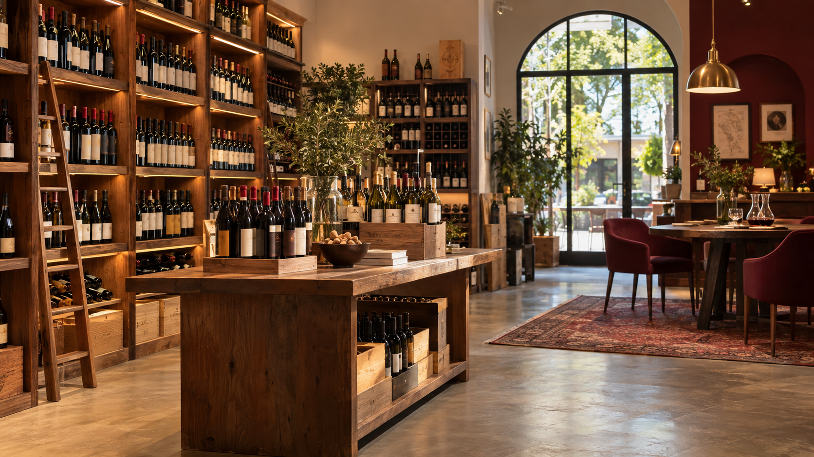
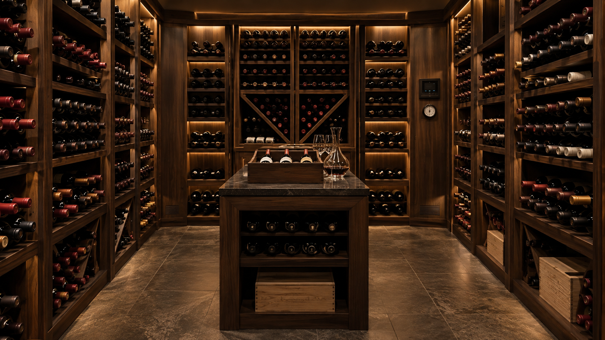

Encontre o vinho ideal para cada ocasião
A Vinharia Agnello oferece uma seleção de vinhos nacionais e internacionais, acompanhada de orientação especializada para ajudar cada cliente a fazer a melhor escolha.
Conheça nossos vinhos
Atendimento próximo e personalizado
Há mais de 15 anos, a família Agnello atende seus clientes em uma loja física na cidade de São Paulo. A empresa é administrada por Giulio e sua filha Bianca e conta com uma equipe preparada para orientar clientes iniciantes e conhecedores de vinho.
O atendimento da Vinharia Agnello funciona como uma consultoria. Os vendedores ajudam o cliente a entender as características das uvas, regiões, vinícolas e rótulos, além de recomendar harmonizações para diferentes refeições e ocasiões.
Conheça a história da Vinharia AgnelloNossos diferenciais
- Seleção de vinhos nacionais e internacionais;
- Atendimento personalizado para cada cliente;
- Orientações sobre uvas, regiões e vinícolas;
- Recomendações de harmonização com alimentos;
- Armazenamento adequado para preservar a qualidade dos vinhos;
- Auxílio para clientes iniciantes no mundo dos vinhos.
Armazenagem controlada
Luz natural, temperaturas elevadas, vibrações e movimentações constantes podem alterar a coloração, o aroma e o sabor de um vinho.
Por isso, a Vinharia Agnello mantém cuidados especiais com suas garrafas, principalmente com os vinhos raros e de maior valor, preservando as características originais de cada produto.

Está em dúvida sobre qual vinho escolher?
Vinho tinto, branco ou espumante? Seco, suave ou semisseco? A escolha depende do seu paladar, da refeição e da ocasião.
Consulte nossas dicas de harmonização ou entre em contato com nossa equipe para receber uma orientação personalizada.
Conheça mais sobre o mundo dos vinhos
Assista ao vídeo introdutório e conheça alguns conceitos importantes para começar a explorar o mundo dos vinhos.